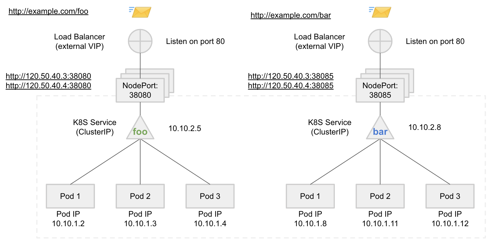
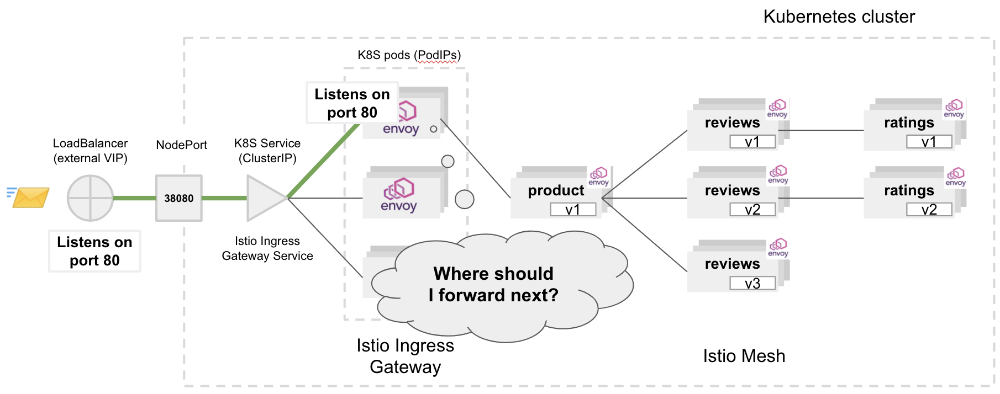
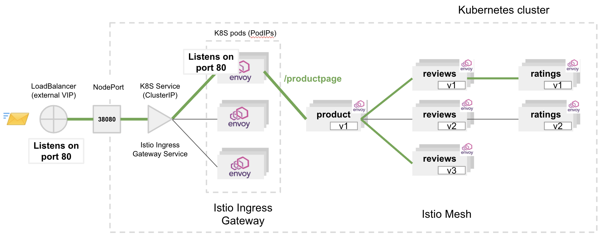

Ingress gateway
This chapter introduces Istio Ingress Gateway and presents how to configure it for the external application access.
Outline
In this chapter you will learn:
- What is Istio Ingress Gateway.
- What is Istio Egress Gateway.
- How to obtain the Ingress endpoint.
- How to configure the external application access.
Walkthrough
Istio Gateway is a load balancer operating at the edge of the service mesh. It is in charge of controlling the ingress (inbound) and egress (outbound) traffic, allowing operators to specify which traffic should enter or leave the mesh. The gateway load balancer consists of one or many Istio proxy instances that can be configured similarly to the proxies running alongside application services as sidecars. For configuring the gateway, Istio provides Gateway and VirtualService policy types.
Istio Ingress Gateway, as the name suggests, provides flexibility of Istio routing for the ingress traffic. Primarily, it enables setting the 4-6 load balancing properties such as ports to expose or TLS settings. It also supports application-layer traffic routing (L7), for instance, routing HTTP requests to application services based on the request path.
Istio Egress Gateway is another load balancer acting as a dedicated exit node for the traffic leaving the mesh. It enables limiting which services can access external networks, as well as enables securing the egress traffic with TLS policies. The Egress Gateway is out of the scope of this workshop.
In this workshop, we will configure Istio Ingress Gateway to expose the application to the public network.
Determine gateway address
Start with inspecting the Ingress Gateway service:
$ kubectl -n istio-system get svc istio-ingressgateway
NAME TYPE CLUSTER-IP EXTERNAL-IP PORT(S) AGE
istio-ingressgateway LoadBalancer 100.68.47.59 a972626016b8742e5813ba4f9c07147b-444579402.us-east-1.elb.amazonaws.com 15020:31805/TCP,80:30886/TCP,443:30993/TCP,15029:30724/TCP,15030:31428/TCP,15031:32219/TCP,15032:32164/TCP,31400:30109/TCP,15443:32646/TCP 45m
Unlike other services of type ClusterIP, the Ingress service has the LoadBalancer service type. That means the service will be exposed outside the Kubernetes cluster. For such service type, AWS provisions an instance of an external ELB load balancer with a public IP address and a DNS hostname. The load balancer will be accessible by external clients (e.g., the web browser of a user) and will forward the ingress traffic from external networks to the Ingress Gateway service inside the Kubernetes cluster:

In order to obtain the address of the Ingress endpoint, run:
$ INGRESS_GATEWAY=$(kubectl -n istio-system get service istio-ingressgateway -o jsonpath='{.status.loadBalancer.ingress[0].hostname}')
$ echo $INGRESS_GATEWAY
a50936c539b864c85a16962a7dcad24b-1660651843.us-east-1.elb.amazonaws.com
Configure gateway port
By default, Istio proxy installed in the Ingress Gateway does not listen on any port - without proper configuration, client requests would fail with Connection Refused errors.
First, apply the required gateway policy:
$ kubectl -n default apply -f ./release/istio/frontend-gateway.yaml
gateway.networking.istio.io/frontend-gateway created
Inspect its content:
$ kubectl -n default describe gateway frontend-gateway
Name: frontend-gateway
Namespace: default
...
Spec:
Selector:
Istio: ingressgateway
Servers:
Hosts:
*
Port:
Name: http
Number: 80
Protocol: HTTP
The above configuration opens port 80 for HTTP traffic for all destination services (Hosts: *) discovered in the mesh. The Selector binds the configuration to the specific Ingress instance.
Now, perform a HTTP request to the Ingress endpoint:
$ curl -v http://$INGRESS_GATEWAY
* Trying 3.231.121.103...
* TCP_NODELAY set
* Connected to a972626016b8742e5813ba4f9c07147b-444579402.us-east-1.elb.amazonaws.com (3.231.121.103) port 80 (#0)
> GET / HTTP/1.1
> Host: a972626016b8742e5813ba4f9c07147b-444579402.us-east-1.elb.amazonaws.com
> User-Agent: curl/7.64.1
> Accept: */*
>
< HTTP/1.1 404 Not Found
< date: Sat, 06 Jun 2020 15:11:23 GMT
< server: istio-envoy
< content-length: 0
<
* Connection #0 to host a972626016b8742e5813ba4f9c07147b-444579402.us-east-1.elb.amazonaws.com left intact
* Closing connection 0
The gateway (server: istio-envoy) should respond with 404 Not Found status code.

Although Ingress has opened the access port for the inbound traffic, it does not know where to forward the request, hence the error. The destination service is not configured yet.
Configure gateway backend
In order to instruct the gateway where to forward the request, apply the VirtualService policy:
$ kubectl -n default apply -f ./release/istio/frontend-ingress.yaml
virtualservice.networking.istio.io/frontend-ingress created
Inspect its content:
$ kubectl -n default describe vs frontend-ingress
Name: frontend-ingress
Namespace: default
...
Spec:
Gateways:
frontend-gateway
Hosts:
*
Http:
Route:
Destination:
Host: frontend
Port:
Number: 80
First, the policy selects the gateway to configure (frontend-gateway). Then, it configures the gateway to route the entire HTTP traffic to the frontend service onto port 80.

Perform another HTTP request to the Ingress endpoint:
$ curl -v http://$INGRESS_GATEWAY
* TCP_NODELAY set
* Connected to a972626016b8742e5813ba4f9c07147b-444579402.us-east-1.elb.amazonaws.com (34.198.22.220) port 80 (#0)
> GET / HTTP/1.1
> Host: a972626016b8742e5813ba4f9c07147b-444579402.us-east-1.elb.amazonaws.com
> User-Agent: curl/7.64.1
> Accept: */*
>
< HTTP/1.1 200 OK
< set-cookie: shop_session-id=fac16c81-52a3-460c-8551-506ebcbe4665; Max-Age=172800
< date: Sat, 06 Jun 2020 16:32:55 GMT
< content-type: text/html; charset=utf-8
< x-envoy-upstream-service-time: 88
< server: istio-envoy
< transfer-encoding: chunked
<
{ [1186 bytes data]
100 10647 0 10647 0 0 16740 0 --:--:-- --:--:-- --:--:-- 16714
* Connection #0 to host a972626016b8742e5813ba4f9c07147b-444579402.us-east-1.elb.amazonaws.com left intact
* Closing connection 0
This time the request should succeed (HTTP/1.1 200 OK) and the Ingress should return the HTML content of the Online Boutique website.
Visit the Ingress address in your web browser (Chrome, Firefox) and explore the application. For instance, try to add products to the cart and go through the checkout process.